Your coding agent,
on your notch.
Live status and one-click permission approvals for AI coding agents. Works with Claude Code today.

$
curl -fsSL https://raw.githubusercontent.com/PShato0x/notchcast/main/get.sh | bash